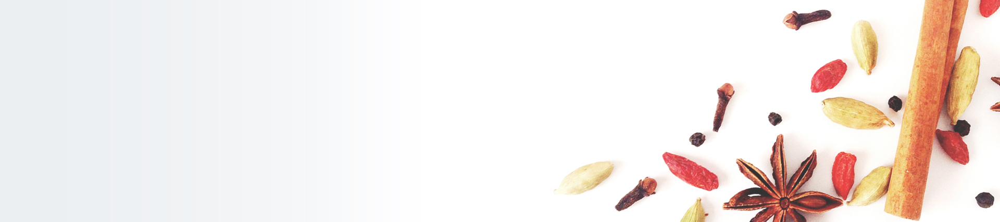

自宅学習で
身につく
薬膳教材。
Created By：
International Yakuzen Academy
中国薬膳の季節感のズレや使えない食材を
全て「日本で薬膳を実践すること」にフォーカスしました。

日本で無理なく手に入る食材を使って、作る人も食べる人も続けやすい薬膳実践方法を具体的にわかりやすく習得できます。
薬膳専門教育の学校が作る
日本人のための薬膳学習教材

手元に置いておけるDVD素材は何度でも見返せて復習ができます。学んだ内容はその日のごはんに即活かせる知識ばかりです。
学ぶ＝活かせる

薬膳初心者からプロまで学べるレベル別薬膳教材
はじめての方からプロを目指す方まで、レベルに合わせた教材をご用意いたしました。
ご家族の健康管理、仕事での活用、また薬膳のプロになるための資格取得に
教材をご活用ください。
初めての方におすすめ
「わかる！使える！」通信教材
テーマ別単発講座DVD教材「私のセルフケアシリーズ」
お好きなデーマだけを選んで受講できる単発講座です。
初心者向け
自宅学習用DVD付き
ポイント学習
私の薬膳セルフケアシリーズ①
気血水の体質診断と薬膳スープの作り方
教材内容
- レシピカード4品付き
- 体質チェックシート付
- レジュメ1冊
- DVD1枚
- レシピカード用ファイル1冊（初回のみ）
¥11,000（税込）
【座学内容】
- 美容薬膳とは
- 薬膳生活実践ポイント
- 気血水とは
- 体質トラブル「気虚」「気滞」
- 体質トラブル「血虚」「瘀血」
- 体質トラブル「陰虚」「水毒（痰湿）」
- 体質チェックシートで体質を知ってみよう
【調理動画内容】
- 基本の薬膳スープの作り方
- 気虚や気滞改善 気のトラブルに良い薬膳スープの作り方
- 血虚や瘀血改善 血のトラブルに良い薬膳スープの作り方
- 陰虚や水毒改善 水のトラブルに良い薬膳スープの作り方
- 習熟目安
- 1日の動画視聴と調理動画を見ながらの薬膳調理を週1シレピで約ひと月


テーマ別単発講座DVD教材「私のセルフケアシリーズ」
お好きなデーマだけを選んで受講できる単発講座です。
初心者向け
自宅学習用DVD付き
ポイント学習
私の薬膳セルフケアシリーズ②
中医美容学で肌を美しく
「ニキビ・吹き出物改善の美容薬膳」
教材内容
- レシピカード4品付き
- レジュメ1冊
- DVD1枚
- レシピカード用ファイル1冊（初回のみ）
¥11,000（税込）
【座学内容】
- 美容薬膳とは
- 美容トラブル別に原因があります
- 年代別に多い肌トラブル
- ニキビ・吹き出物の原因
- 学生時代のニキビ・中高年のニキビ
- ニキビ・吹き出物が出る場所で知る体の状態
- ニキビの色で知る食材
- ニキビ・吹き出物に使う食材
- ニキビ・吹き出物の出る位置別薬膳メニュー4品
【調理動画内容】
- ごぼう入り鶏ささみのつくね 梅紫蘇ソース
- ゆり根と湯葉のくず豆腐あんかけ
- はと麦入りミネストローネ
- あさりとうずらの卵入り ひじきの煮物
- 習熟目安
- 1日の動画視聴と調理動画を見ながらの薬膳調理を週1シレピで約ひと月


初めての方におすすめ